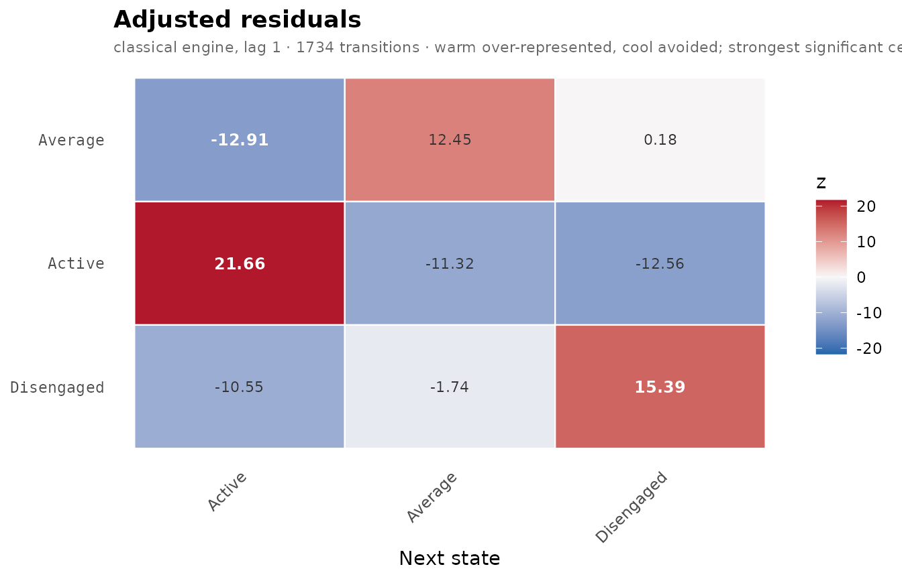
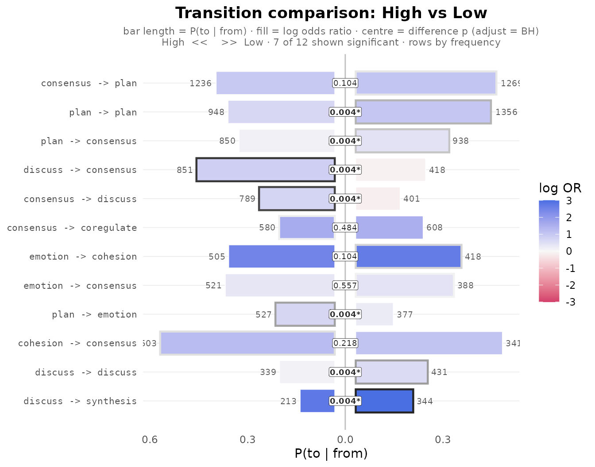

A complete workflow
Written by Mohammed Saqr and Sonsoles López-Pernas
Source:vignettes/articles/workflow.Rmd
workflow.RmdLag sequential analysis (LSA) asks whether one event follows another more often, or less often, than it would if the events of a sequence were independent of each other (Bakeman & Gottman, 1997; Bakeman & Quera, 2011). For every ordered pair of states it compares the observed count of the transition with the count expected from the marginal frequencies of the two states, and expresses the difference as an adjusted residual: a positive residual marks a transition the process favours, a negative residual marks a transition the process avoids.
A finding from LSA is a claim, and each kind of claim needs its own evidence. A descriptive claim (“disengaged students tend to stay disengaged”) rests on the fitted transition table. A claim about a single transition adds an interval for it. A claim about the whole network adds a check that the network reproduces in independent halves of the data. A claim that two groups differ needs a test of the difference. This guide runs that chain from end to end on the bundled data: it fits a model to weekly engagement states, reads and draws the result, adds uncertainty evidence, then fits one model per achievement group from a raw event log and tests where the groups differ. The method itself is introduced in the LSA vignette; the full confirmatory battery is in the confirmatory vignette.
Data
The first part of the guide uses engagement, a wide data
frame with one row per student and one column per week of a course.
- Sequence: each row is one student; 138 rows, of which 2 are empty.
- Time point: the 15 columns, in course order.
-
State: the weekly engagement state,
Active,Average, orDisengaged. A missing cell means no record that week.
head(engagement)
#> 1 2 3 4 5 6 7 8 9
#> 1 Active Disengaged Disengaged Disengaged Active Active Active Active Average
#> 2 Average Average Average Average Average Average Average Average Average
#> 3 Average Active Active Active Active Active Active Active Active
#> 4 Active Active Active Active Active Average Average Active Active
#> 5 Active Active Active Average Active Average Active Active Active
#> 6 Average Average Disengaged Average Disengaged Disengaged Average Average Average
#> 10 11 12 13 14 15
#> 1 Active Average Active <NA> <NA> <NA>
#> 2 Active Average Average Average Average Average
#> 3 Average Active Active Active Active Active
#> 4 Active Average Active Average Active Average
#> 5 Disengaged Active Active Active Average Average
#> 6 Disengaged Average Disengaged Average Average AverageThe second part uses group_regulation_long, an event log
of collaborative learning with one coded regulation action per row.
-
Actor:
Actor, the student who acted; 2,000 actors. -
Action:
Action, one of nine regulation codes (adapt,cohesion,consensus,coregulate,discuss,emotion,monitor,plan,synthesis). -
Time:
Time, the time stamp that orders the actions. -
Group:
Achiever,HighorLowachievement, fixed for each actor.
head(group_regulation_long)
#> Actor Achiever Group Course Time Action
#> 1 1 High 1 A 2025-01-01 08:27:07 cohesion
#> 2 1 High 1 A 2025-01-01 08:35:20 consensus
#> 3 1 High 1 A 2025-01-01 08:42:18 discuss
#> 4 1 High 1 A 2025-01-01 08:50:00 synthesis
#> 5 1 High 1 A 2025-01-01 08:52:25 adapt
#> 6 1 High 1 A 2025-01-01 08:57:31 consensusFit the model
lsa() turns the rows into sequences, counts every lag-1
transition, computes the counts expected under independence, and tests
each cell. The print method gives the size of the data, the tablewise
independence test, and the strongest favoured transitions.
fit <- lsa(engagement)
fit
#> Lag Sequential Analysis - classical (lag 1, directed)
#> 3 states | 1734 transitions | 1870 events | 136 sequences
#> states: Active, Average, Disengaged
#> independence: G² = 618.3, df = 4, p <2e-16
#>
#> Significant transitions (p < 0.05): 7 of 9
#> strongest over-represented (of 3):
#> Active -> Active z = +21.7 ***
#> Disengaged -> Disengaged z = +15.4 ***
#> Average -> Average z = +12.5 ***
#>
#> Initial states:
#> Active 0.382 ████████████████████████
#> Average 0.368 ███████████████████████
#> Disengaged 0.250 ████████████████The model rests on 1,734 transitions from 136 sequences: the two
empty rows contribute nothing. The likelihood-ratio test of independence
is G² = 618.3 on 4 degrees of freedom, so the weekly states are far from
independent of the previous week’s state. Seven of the nine transitions
depart from chance, and the three favoured ones are the three
self-transitions: Active -> Active (z = 21.7),
Disengaged -> Disengaged (z = 15.4), and
Average -> Average (z = 12.5). Engagement is
persistent.
Overview of the fit
summary() returns the same overview as one table row,
and the nodes table describes the states: how many
transitions leave and enter each state, their shares, and the share of
sequences that start in it.
as.data.frame(summary(fit))
#> engine lag n_states n_sequences n_events n_transitions n_significant alpha lrx2
#> 1 classical 1 3 136 1870 1734 7 0.05 618
#> lrx2_df lrx2_p x2 x2_df x2_p
#> 1 4 1.69e-132 629 4 7.41e-135
as.data.frame(summary(fit), what = "nodes")
#> state outgoing incoming out_share in_share init_prob
#> 1 Active 658 651 0.379 0.375 0.382
#> 2 Average 751 763 0.433 0.440 0.368
#> 3 Disengaged 325 320 0.187 0.185 0.250Average carries the largest share of activity (0.433 of
outgoing transitions), Disengaged the smallest (0.187). A
quarter of the students (0.250) start the course disengaged, against
0.382 who start active.
Which transitions depart from chance
transitions() returns one row per transition, with the
observed and expected counts, the transition probability, the adjusted
residual and its p-value, and effect sizes (Yule’s Q, kappa, lift).
sort = "strength" orders the rows by the absolute residual;
significant = TRUE would keep only the transitions
significant at alpha = 0.05.
transitions(fit, sort = "strength")
#> from to lag count expected prob prob_col adj_res p yules_q
#> 1 Active Active 1 459 247 0.698 0.7051 21.663 4.60e-104 0.828
#> 2 Disengaged Disengaged 1 157 60 0.483 0.4906 15.390 1.90e-53 0.754
#> 3 Average Active 1 153 282 0.204 0.2350 -12.906 4.16e-38 -0.601
#> 4 Active Disengaged 1 23 121 0.035 0.0719 -12.557 3.64e-36 -0.826
#> 5 Average Average 1 458 330 0.610 0.6003 12.453 1.35e-35 0.553
#> 6 Active Average 1 176 290 0.267 0.2307 -11.319 1.06e-29 -0.534
#> 7 Disengaged Active 1 39 122 0.120 0.0599 -10.549 5.11e-26 -0.698
#> 8 Disengaged Average 1 129 143 0.397 0.1691 -1.736 8.25e-02 -0.108
#> 9 Average Disengaged 1 140 139 0.186 0.4375 0.176 8.60e-01 0.011
#> kappa kappa_z kappa_p lift sign significant
#> 1 0.4438 19.19 4.68e-82 1.858 over TRUE
#> 2 0.3136 13.56 7.34e-42 2.618 over TRUE
#> 3 -0.4994 -14.70 6.81e-49 0.543 under TRUE
#> 4 -0.8272 -13.41 5.14e-41 0.189 under TRUE
#> 5 0.2275 9.83 7.97e-23 1.386 over TRUE
#> 6 -0.4242 -12.48 9.39e-36 0.608 under TRUE
#> 7 -0.7069 -11.46 2.03e-30 0.320 under TRUE
#> 8 -0.1618 -2.96 3.03e-03 0.902 under FALSE
#> 9 -0.0903 -1.66 9.79e-02 1.010 over FALSEFour of the six moves between different states are avoided. The
strongest avoidance is Average -> Active (z = -12.9,
Yule’s Q = -0.601), followed closely by
Active -> Disengaged (z = -12.6): an active student
almost never drops to disengagement in one week (23 observed against 121
expected, probability 0.035). The remaining two moves,
Disengaged -> Average (z = -1.74, p = 0.083) and
Average -> Disengaged (z = 0.18, p = 0.86), occur about
as often as chance predicts. The probability column is the transition
probability that a transition network displays; the residual and Yule’s
Q say whether that probability is larger or smaller than chance.
Display the model
A residual heatmap shows the residual of every cell: rows are the current state, columns the next state, and the colour gives the sign and size of the departure from chance.
plot(fit)
The three red cells are the self-transitions and the blue cells the avoided moves between states, which is the persistence reported above in one display. The rows are ordered by how many transitions leave each state, so the self-transitions do not form a visual diagonal.
A transition network draws the same process with edges weighted by transition probability, the form used in transition network analysis. It answers a different question: where the process tends to go next, rather than which moves are surprising.
plot(fit, type = "network", weights = "tna")
The two displays answer different questions, and they part ways on
Disengaged -> Average: with a probability of 0.397 it is
one of the heaviest edges in the transition network, yet its residual is
not significant, because Average is common enough that
chance alone predicts a move of that size. Every display is covered in
the plotting guide.
How precise are the transition probabilities
certainty_lsa() gives analytic credible intervals for
each transition probability from a Dirichlet-multinomial posterior, and
marks an edge as stable when its residual keeps its sign across the
interval.
cert <- certainty_lsa(fit)
cert
#> <lsa_certainty> (analytic Dirichlet-Multinomial)
#> engine: classical
#> prior: Dirichlet(0.50)
#> CI level: 95% | inference: stability
#> certain edges: 7 of 9
transitions(cert, sort = "strength")
#> from to observed prob_observed prob_mean prob_se prob_ci_low prob_ci_high
#> 1 Active Active 459 0.698 0.6967 0.01789 0.6611 0.731
#> 2 Disengaged Disengaged 157 0.483 0.4824 0.02761 0.4284 0.537
#> 3 Average Active 153 0.204 0.2040 0.01468 0.1760 0.233
#> 4 Active Disengaged 23 0.035 0.0356 0.00721 0.0229 0.051
#> 5 Average Average 458 0.610 0.6093 0.01777 0.5742 0.644
#> 6 Active Average 176 0.267 0.2676 0.01723 0.2345 0.302
#> 7 Disengaged Active 39 0.120 0.1210 0.01802 0.0879 0.158
#> 8 Disengaged Average 129 0.397 0.3966 0.02703 0.3443 0.450
#> 9 Average Disengaged 140 0.186 0.1867 0.01420 0.1597 0.215
#> p_value stable adj_res_observed adj_res_stable
#> 1 5.56e-20 TRUE 21.663 TRUE
#> 2 9.44e-06 TRUE 15.390 TRUE
#> 3 6.06e-04 TRUE -12.906 TRUE
#> 4 2.19e-01 FALSE -12.557 FALSE
#> 5 3.14e-17 TRUE 12.453 TRUE
#> 6 1.21e-04 TRUE -11.319 TRUE
#> 7 9.45e-02 FALSE -10.549 FALSE
#> 8 2.23e-04 TRUE -1.736 TRUE
#> 9 1.17e-03 TRUE 0.176 TRUESeven of the nine probabilities are certain. The probability of the
strongest edge, Active -> Active, lies between 0.661 and
0.731 with 95% credibility. The two uncertain ones are the two rarest
transitions, Active -> Disengaged (23 observations,
interval 0.023 to 0.051) and Disengaged -> Active (39
observations): their intervals are wide relative to the probability
itself, so the posterior does not stay within 75% to 125% of the
observed value. Their residuals are strongly negative all the same; the
uncertainty concerns the size of a small probability, not the
avoidance.
Do the residuals hold when sequences are resampled
bootstrap_lsa() resamples whole sequences with
replacement, refits the model on each resample, and reports a percentile
interval for every statistic (Efron, 1979). Resampling sequences keeps
each student’s transitions together, so the interval reflects variation
between students. The seed makes the resamples reproducible.
set.seed(2026)
boot <- bootstrap_lsa(fit, R = 1000)
boot
#> <lsa_bootstrap>
#> engine: classical
#> level: sequence
#> replicates: 1000
#> CI level: 95%
#> stable edges: 7 of 9
transitions(boot, significant = TRUE, sort = "strength") |> head(5)
#> from to observed count_mean count_se count_ci_low count_ci_high
#> 1 Active Active 459 461.1 52.50 360 568
#> 2 Disengaged Disengaged 157 156.1 28.06 106 213
#> 3 Average Active 153 152.8 14.79 124 182
#> 4 Active Disengaged 23 22.7 4.99 14 32
#> 5 Average Average 458 458.8 39.30 383 532
#> adj_res_observed adj_res_mean adj_res_se adj_res_ci_low adj_res_ci_high adj_res_p_boot
#> 1 21.7 21.6 1.55 18.65 24.61 0
#> 2 15.4 15.3 1.96 11.10 18.95 0
#> 3 -12.9 -12.9 1.52 -15.79 -9.99 0
#> 4 -12.6 -12.5 1.06 -14.68 -10.42 0
#> 5 12.5 12.5 1.37 9.84 15.16 0
#> adj_res_stable prob_observed prob_mean prob_ci_low prob_ci_high yules_q_observed
#> 1 TRUE 0.698 0.6974 0.6371 0.752 0.828
#> 2 TRUE 0.483 0.4800 0.3846 0.564 0.754
#> 3 TRUE 0.204 0.2041 0.1623 0.247 -0.601
#> 4 TRUE 0.035 0.0346 0.0205 0.049 -0.826
#> 5 TRUE 0.610 0.6102 0.5640 0.655 0.553
#> yules_q_mean yules_q_ci_low yules_q_ci_high
#> 1 0.826 0.760 0.882
#> 2 0.750 0.633 0.834
#> 3 -0.601 -0.700 -0.489
#> 4 -0.826 -0.900 -0.745
#> 5 0.553 0.451 0.648Seven of the nine residuals are stable across 1,000 resamples of
students, and every interval shown excludes zero by a wide margin: the
residual of Active -> Disengaged stays between -14.7 and
-10.4, so the avoidance of that move holds across students even though
its probability is small. The persistence findings and the avoided moves
are therefore not produced by a few unusual students.
Is the whole network reproducible
reliability_lsa() splits the sequences into two random
halves, fits the model to each half, and correlates the two sets of edge
weights. A high split-half correlation means the network as a whole
would be recovered from a different sample of the same size.
rel <- reliability_lsa(fit, R = 100)
rel
#> <lsa_reliability>
#> engine: classical
#> replicates: 100
#> weights: prob
#> method: pearson
#> n sequences: 136
#> split-half r: 0.961 (sd = 0.034)
#> 95% CI: [0.890, 0.993]
#> failed: 0 of 100 replicatesAcross 100 random splits the two halves agree closely: the mean split-half correlation is 0.961, with a 95% interval from 0.890 to 0.993, and no split failed. The engagement network is reproducible at this sample size.
From an event log to sequences
Process data usually arrives as an event log rather than as wide
sequences. lsa() builds the sequences itself when the
columns are named: actor identifies the sequence,
action is the state, and time orders the
events. A new sequence also starts whenever two consecutive events of an
actor are more than time_threshold seconds apart (900 by
default). The column grammar and its options are covered in the event-log guide.
fit_log <- lsa(group_regulation_long, actor = "Actor", action = "Action",
time = "Time")
fit_log
#> Lag Sequential Analysis - classical (lag 1, directed)
#> 9 states | 25533 transitions | 27533 events | 2000 sequences
#> states: adapt, cohesion, consensus, coregulate, discuss, emotion, monitor, plan, synthesis
#> independence: G² = 13203.8, df = 64, p <2e-16
#>
#> Significant transitions (p < 0.05): 72 of 81
#> strongest over-represented (of 23):
#> emotion -> cohesion z = +58.2 ***
#> discuss -> synthesis z = +48.0 ***
#> synthesis -> adapt z = +38.8 ***
#> consensus -> coregulate z = +35.3 ***
#> consensus -> plan z = +32.6 ***
#> ... and 18 more
#>
#> Initial states:
#> consensus 0.214 ████████████████████████
#> plan 0.204 ███████████████████████
#> discuss 0.175 ████████████████████
#> emotion 0.151 █████████████████
#> monitor 0.144 ████████████████
#> cohesion 0.060 ███████
#> synthesis 0.019 ██
#> coregulate 0.019 ██
#> adapt 0.011 █The 27,533 actions form 2,000 sequences, one per actor, and 25,533
transitions. Seventy-two of the 81 transitions depart from chance. The
strongest favoured transition is emotion -> cohesion (z
= 58.2), followed by discuss -> synthesis (z =
48.0).
One model per group
Naming a grouping column with group fits one model per
group under the same set of states. The grouping column must be constant
within each sequence.
gfit <- lsa(group_regulation_long, actor = "Actor", action = "Action",
time = "Time", group = "Achiever")
summary(gfit)
#> group engine lag n_states n_sequences n_events n_transitions n_significant alpha
#> 1 High classical 1 9 1000 13721 12721 66 0.05
#> 2 Low classical 1 9 1000 13812 12812 67 0.05
#> lrx2 lrx2_df lrx2_p x2 x2_df x2_p
#> 1 6147 64 0 6807 64 0
#> 2 7715 64 0 9197 64 0Each group contributes 1,000 sequences: 12,721 transitions for the
high achievers and 12,812 for the low achievers. Both tables reject
independence, and the groups have a similar number of significant
transitions (66 and 67). Every reading verb returns a leading
group column for a grouped fit.
transitions(gfit, significant = TRUE, sort = "strength") |> head(6)
#> group from to lag count expected prob prob_col adj_res p yules_q
#> 1 High emotion cohesion 1 505 114.0 0.3258 0.53953 40.6 0.00e+00 0.847
#> 2 High consensus consensus 1 283 917.0 0.0834 0.08229 -28.6 3.68e-180 -0.698
#> 3 High discuss synthesis 1 213 46.1 0.1063 0.72696 27.1 1.79e-161 0.881
#> 4 High discuss plan 1 25 458.8 0.0125 0.00858 -25.1 2.35e-139 -0.934
#> 5 High consensus coregulate 1 580 254.4 0.1710 0.60797 24.8 1.21e-135 0.663
#> 6 High consensus plan 1 1236 777.0 0.3644 0.42416 21.9 2.64e-106 0.447
#> kappa kappa_z kappa_p lift sign significant
#> 1 0.425 37.7 6.36e-311 4.4280 over TRUE
#> 2 -0.709 -30.1 5.36e-199 0.3086 under TRUE
#> 3 0.613 25.5 5.39e-143 4.6169 over TRUE
#> 4 -0.949 -26.0 3.81e-149 0.0545 under TRUE
#> 5 0.462 24.6 9.79e-134 2.2801 over TRUE
#> 6 0.180 19.0 3.49e-80 1.5907 over TRUEThe strongest residual in the high achievers is
emotion -> cohesion (z = 40.6). The question of the next
section is whether any transition is stronger in one group than in the
other.
Do the groups differ
compare_lsa() tests the difference between the groups
edge by edge. The statistic is the difference in the log odds ratio of
each transition between the groups; its null distribution comes from
permuting the group labels of whole sequences, R times.
With many edges tested at once, the p-values are corrected for
multiplicity: adjust = "BH" applies the Benjamini-Hochberg
false discovery rate correction, and the significant column
below refers to the adjusted p-values (p_adj). The package
default is no adjustment, so the argument is passed explicitly.
set.seed(2026)
cmp <- compare_lsa(gfit, R = 1000, adjust = "BH")
cmp
#> <lsa_comparison>
#> groups: High vs Low
#> measure: log_or difference (High - Low)
#> R: 1000 label permutations
#> edges: 39 significant of 78 tested (adjust = BH)
#> omnibus: statistic = 79.48, p = 0.000999
as.data.frame(cmp, what = "global")
#> group_a group_b statistic p_value R
#> 1 High Low 79.5 0.000999 1000The omnibus test rejects the hypothesis that the two groups share one
transition structure (statistic 79.5, p = 0.000999). That p-value is 1 /
(R + 1), the smallest value 1,000 permutations can give, so the
difference is at least as extreme as the permutation null allows. Of the
78 edges with enough observations to test (the default
min_count = 5), 39 differ after the Benjamini-Hochberg
correction. Sorting by the size of the difference shows the largest
ones.
transitions(cmp, significant = TRUE, sort = "strength") |> head(8)
#> from to log_or_a log_or_b diff p_perm p_adj significant
#> 1 cohesion adapt -0.794 -3.921 3.13 0.000999 0.00354 TRUE
#> 2 emotion synthesis -1.619 -4.522 2.90 0.000999 0.00354 TRUE
#> 3 plan synthesis -2.145 -4.951 2.81 0.001998 0.00577 TRUE
#> 4 cohesion synthesis -1.355 -3.945 2.59 0.005994 0.01461 TRUE
#> 5 synthesis monitor -3.229 -0.975 -2.25 0.008991 0.02063 TRUE
#> 6 synthesis plan -0.581 -2.680 2.10 0.000999 0.00354 TRUE
#> 7 adapt coregulate -3.146 -1.176 -1.97 0.013986 0.02871 TRUE
#> 8 plan adapt -2.338 -4.230 1.89 0.024975 0.04995 TRUEThe diff column is the high-achiever log odds ratio
minus the low-achiever one. The largest difference is
cohesion -> adapt (3.13): the move is avoided in both
groups but far more strongly by the low achievers (-3.921 against
-0.794). Three of the next differences end in synthesis
(emotion, plan, and
cohesion -> synthesis), each avoided much more strongly
by the low achievers. The negative differences run the other way:
synthesis -> monitor (-2.25) is avoided more strongly by
the high achievers.
A comparison barrel plot shows the two groups side by side for the most frequent transitions: the high achievers’ transition probability runs to the left and the low achievers’ to the right, the bar labels give the counts, the fill gives the log odds ratio, and the centre carries the adjusted p-value of the difference.
plot(cmp)
Seven of the twelve most frequent transitions differ between the
groups. The high achievers move between discussion and consensus far
more often (discuss -> consensus: 851 against 418
observations; consensus -> discuss: 789 against 401),
while the low achievers more often follow discussion with synthesis
(discuss -> synthesis: 344 against 213). The backbone
transition consensus -> plan is equally frequent in both
groups (p = 0.104).
When to use which
| Claim | Evidence | Call |
|---|---|---|
| The process is not memoryless | Tablewise G² test |
lsa(), tests()
|
| This transition is favoured or avoided | Adjusted residual | transitions(fit, significant = TRUE) |
| The transition probability is known to this precision | Credible interval | certainty_lsa() |
| The residual holds across students | Sequence bootstrap | bootstrap_lsa() |
| The network would reproduce in new data | Split-half correlation | reliability_lsa() |
| The groups differ on this transition | Permutation test, BH-adjusted | compare_lsa(adjust = "BH") |
Descriptive claims use the fitted tables and the displays. A claim about one edge adds an interval, a claim about the whole network adds reliability, and a claim about groups adds the permutation comparison with the multiplicity correction stated.
References
Bakeman, R., & Gottman, J. M. (1997). Observing interaction: An introduction to sequential analysis (2nd ed.). Cambridge University Press.
Bakeman, R., & Quera, V. (2011). Sequential analysis and observational methods for the behavioral sciences. Cambridge University Press.
Efron, B. (1979). Bootstrap methods: Another look at the jackknife. The Annals of Statistics, 7(1), 1-26.